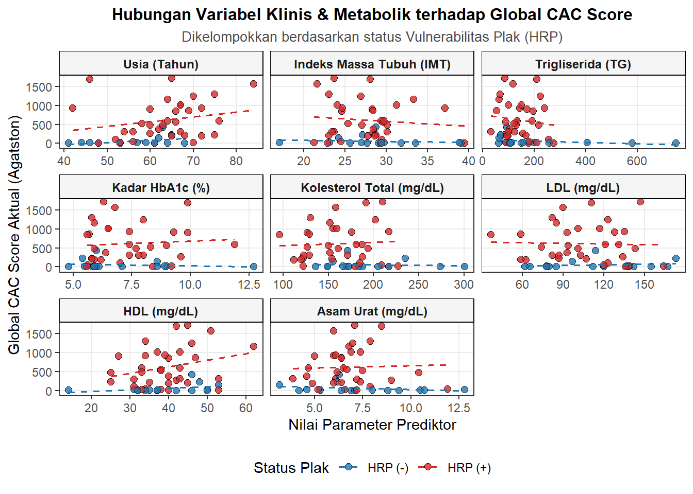
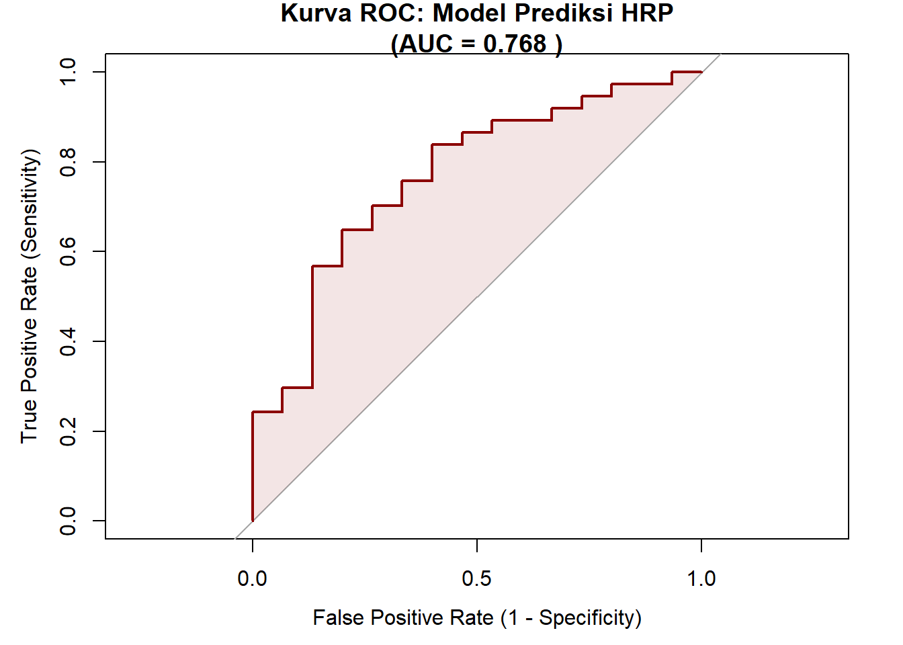
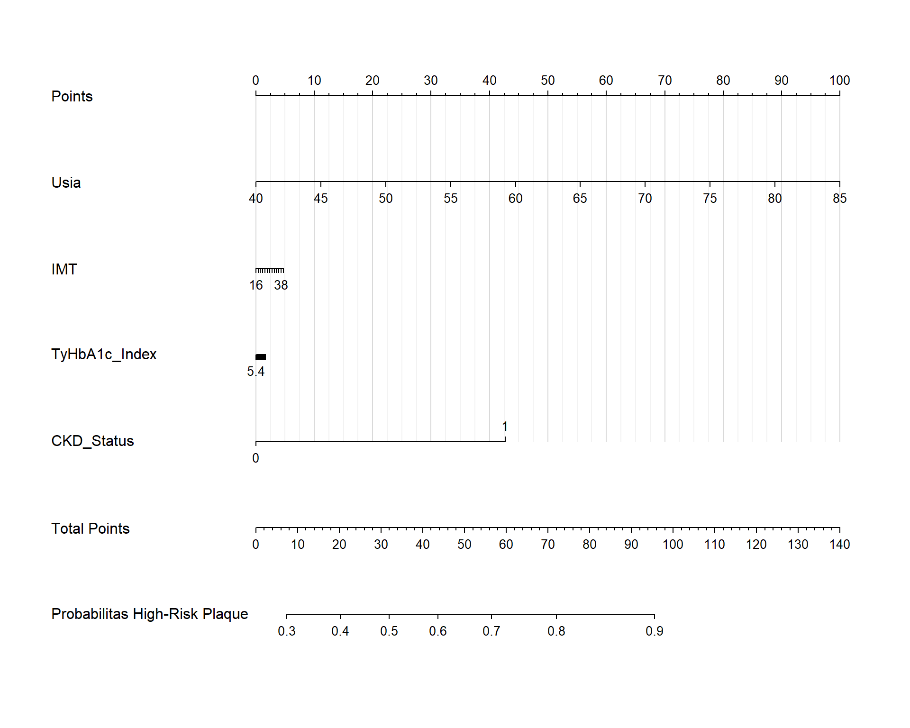

Kombinasi TyHbA1c Index, Usia, dan Indeks Massa Tubuh sebagai Prediktor High-Risk Plaque pada Pasien Diabetes Mellitus: Sebuah Pendekatan Nomogram Klinis
Author
Affiliation
Kadek Adit Wiryadana
RSUP Ngoerah
Published
25 August 2026, 22:16
Abstract
Tuliskan abstrak penelitian Anda di sini. Abstrak akan otomatis diformat sesuai standar AGU untuk versi PDF, dan ditampilkan secara responsif di versi HTML.
1 Pendahuluan
Penyakit kardiovaskular aterosklerotik (ASCVD) tetap menjadi penyebab utama morbiditas dan mortalitas pada pasien dengan Diabetes Mellitus (DM). Peningkatan risiko kardiovaskular pada populasi ini tidak hanya didorong oleh hiperglikemia, melainkan oleh interaksi kompleks yang melibatkan resistensi insulin, dislipidemia aterogenik, dan inflamasi sistemik. Meskipun parameter lipid konvensional seperti Low-Density Lipoprotein (LDL) dan Kolesterol Total telah lama digunakan sebagai prediktor risiko, banyak pasien DM yang tetap mengalami kejadian kardiovaskular akut meskipun kadar profil lipid mereka telah mencapai target terapi (residual risk). Hal ini mendorong pencarian penanda biologis (biomarker) alternatif yang mampu merepresentasikan patofisiologi aterosklerosis pada populasi DM secara lebih komprehensif. Resistensi insulin kronis merupakan motor utama dalam proses disfungsi endotel dan pembentukan plak kerentanan tinggi (vulnerable plaque). Belakangan ini, Triglyceride-Glucose (TyG) Index muncul sebagai penanda substitusi yang divalidasi untuk resistensi insulin. Namun, penggunaan glukosa darah puasa (GDP) dalam rumus TyG memiliki keterbatasan akibat tingginya fluktuasi glikemik harian. Oleh karena itu, indeks TyHbA1c yang menggabungkan kadar trigliserida dengan HbA1c diajukan sebagai parameter yang jauh lebih stabil dalam mencerminkan beban glukolipotoksisitas kronis. Evaluasi anatomi arteri koroner non-invasif saat ini dapat dilakukan secara akurat menggunakan Computed Tomography Coronary Angiography (CTCA). Sistem pelaporan CAD-RADS tidak hanya menilai derajat keparahan stenosis, tetapi juga mengidentifikasi keberadaan High-Risk Plaque (HRP)—seperti positive remodeling, low-attenuation plaque, spotty calcification, dan napkin-ring sign—yang merupakan cikal bakal terjadinya sindrom koroner akut. Hingga saat ini, pemodelan multivariat yang menggabungkan indeks glukolipotoksisitas kronis (TyHbA1c) dengan penanda adipositas viseral (Indeks Massa Tubuh/IMT) dan faktor durasi degeneratif (Usia) untuk memprediksi fitur HRP pada CTCA belum banyak diteliti. Penelitian ini bertujuan untuk mengevaluasi kemampuan prediktif dari kombinasi TyHbA1c Index, Usia, dan IMT terhadap keberadaan HRP serta keparahan obstruksi koroner pada pasien DM, sekaligus mengembangkan sebuah nomogram klinis guna memfasilitasi stratifikasi risiko kardiovaskular secara praktis di ruang praktik.
2 Metode
Desain dan Populasi Penelitian
Penelitian ini merupakan studi analitik observasional dengan pendekatan potong lintang (cross-sectional) yang dilakukan secara retrospektif (atau prospektif, sesuaikan dengan desain dr.). Populasi target adalah pasien dengan diagnosis Prediabetes atau Diabetes Mellitus yang menjalani pemeriksaan Computed Tomography Coronary Angiography (CTCA) di RSUP Prof. dr. I.G.N.G. Ngoerah, Denpasar, Bali, pada periode [Bulan Tahun] hingga [Bulan Tahun]. Teknik pengambilan sampel menggunakan consecutive sampling hingga target sampel minimal terpenuhi. Kriteria eksklusi meliputi pasien dengan data rekam medis atau laboratorium yang tidak lengkap, riwayat operasi Coronary Artery Bypass Grafting (CABG), atau kondisi gagal ginjal tahap akhir.
Pengumpulan Data dan Definisi Operasional
Data karakteristik demografi (Usia, Jenis Kelamin), antropometri (Indeks Massa Tubuh), riwayat penyakit penyerta, serta hasil laboratorium (HbA1c, Trigliserida, Kolesterol Total, LDL, HDL) diekstraksi dari rekam medis elektronik. Indeks TyHbA1c dihitung menggunakan formula logaritma natural: TyHbA1c = ln(Trigliserida [mg/dL] x HbA1c [%]).
Evaluasi CTCA dilakukan oleh dokter spesialis radiologi konsultan yang tersertifikasi. Variabel dependen utama dalam penelitian ini adalah:
1. Keparahan Obstruksi Koroner: Diklasifikasikan berdasarkan sistem CAD-RADS 2.0, di mana kategori obstruktif signifikan didefinisikan sebagai CAD-RADS $\ge$ 3 (stenosis $\ge$ 50%).
2. Keberadaan High-Risk Plaque (HRP): Ditetapkan sebagai variabel biner (Ya/Tidak), yang positif apabila ditemukan minimal satu dari empat fitur berikut pada lesi koroner: positive remodeling (PR), low-attenuation plaque (LAP), spotty calcification (SC), atau napkin-ring sign (NRS).
Analisis Statistik
Analisis data dilakukan menggunakan perangkat lunak R. Variabel kontinu disajikan dalam bentuk rerata dan simpangan baku (distribusi normal) atau median dan rentang interkuartil (distribusi tidak normal). Analisis komparatif bivariat dilakukan menggunakan uji Mann-Whitney U atau Independent T-test untuk variabel kontinu, serta uji Chi-Square atau Fisher’s Exact untuk variabel kategorik.
Pemodelan prediktif dilakukan menggunakan analisis Regresi Logistik Multivariat. Variabel prediktor yang dimasukkan ke dalam model utama adalah Usia, IMT, dan TyHbA1c Index. Performa diskriminatif model dievaluasi dengan menggunakan Area Under the Curve (AUC) dari Receiver Operating Characteristic (ROC). Signifikansi statistik ditetapkan pada nilai $p < 0,05$. Berdasarkan koefisien regresi dari model multivariat final, sebuah nomogram klinis akan dikonstruksi. Kinerja nomogram divalidasi secara internal melalui uji kalibrasi (Hosmer-Lemeshow goodness-of-fit) dan metode bootstrapping (1000 resamples) untuk menghasilkan indeks konkordansi (C-index) yang terkoreksi.
2.1 1. Setup
Code
# Install packages jika belum ada (hapus tanda # jika perlu install)# install.packages(c("googlesheets4", "dplyr", "pROC", "rms", "ggplot2", "gtsummary"))library(googlesheets4) # Untuk mengambil data dari Google Sheetslibrary(dplyr) # Untuk manipulasi datalibrary(pROC) # Untuk analisis kurva ROC dan AUClibrary(rms) # Untuk regresi dan pembuatan Nomogramlibrary(ggplot2) # Untuk visualisasi datalibrary(gtsummary) # Untuk membuat tabel hasil klinis yang rapilibrary(tidyverse)
2.2 2. Loading Data
Code
# Otorisasi Google Sheets (Pilih '0' atau login sesuai petunjuk di console R)gs4_auth(email =TRUE) # Tautan Google Sheetssheet_url <-"[https://docs.google.com/spreadsheets/d/18yyL48LTB-njD6iGNwiuYiiG4uCG1edVn6d3TYQnpE8/edit?gid=288598852#gid=288598852](https://docs.google.com/spreadsheets/d/18yyL48LTB-njD6iGNwiuYiiG4uCG1edVn6d3TYQnpE8/edit?gid=288598852#gid=288598852)"# Membaca datadf_raw <-read_sheet(sheet_url, sheet =1)
2.3 3. Data Cleaning
Code
df_clean <- df_raw %>%# Filter pasien yang memiliki No. RMfilter(!is.na(`No. RM`)) %>%# Konversi tipe data karakter ke numerik (mengganti koma dengan titik)mutate(across(c(Usia, IMT, HbA1C, Trigliserida, Kreatinin, `Kolesterol-Total`, LDL, HDL, `Asam-Urat`), ~as.numeric(gsub(",", ".", as.character(.x))))) %>%# Membuat variabel barumutate(# 1. TyHbA1c Index (Logaritma Natural dari Trigliserida * HbA1c)TyHbA1c_Index =log(Trigliserida * HbA1C),# 2. Status HRP (1 = Ada HRP, 0 = Tidak ada HRP)HRP_Status =ifelse(grepl("HRP", `Global_CAD-RADS`, ignore.case =TRUE), 1, 0),HRP_Status =factor(HRP_Status, levels =c("HRP (-)", "HRP (+)")),# 3. Status CKD (1 = Kreatinin > 1.2, 0 = Kreatinin <= 1.2)CKD_Status =ifelse(Kreatinin >1.2, 1, ifelse(Kreatinin <=1.2, 0, NA)) ) %>%# Membuang missing values hanya pada variabel yang akan dianalisisfilter(!is.na(Usia), !is.na(IMT), !is.na(TyHbA1c_Index), !is.na(CKD_Status), !is.na(HRP_Status))# Menampilkan ringkasan sampel finalcat("Total sampel siap dianalisis (n):", nrow(df_clean), "\n")
Penelitian ini melibatkan 40 pasien dengan diagnosis diabetes atau prediabetes yang menjalani pemeriksaan Computed Tomography Coronary Angiography (CTCA). Setelah mengeksklusi sampel dengan data profil lipid yang tidak lengkap, total 39 subjek dimasukkan ke dalam analisis pemodelan akhir. Usia rata-rata subjek adalah 60,69 $\pm$ 10,62 tahun, dengan Indeks Massa Tubuh (IMT) rata-rata berada pada kategori overweight hingga obesitas tingkat I (28,39 $\pm$ 4,78 kg/m$^2$). Status glikemik menunjukkan rata-rata HbA1c sebesar 7,49 $\pm$ 1,89%, sedangkan rerata kadar trigliserida adalah 152,59 $\pm$ 123,21 mg/dL. Rentang TyHbA1c Index pada populasi ini berkisar antara 5,54 hingga 8,32 (Rerata = 6,81 $\pm$ 0,67).
Berdasarkan evaluasi CTCA, sebanyak 26 pasien (66,7%) teridentifikasi memiliki sekurang-kurangnya satu fitur kerentanan plak atau High-Risk Plaque (HRP). Sementara itu, prevalensi pasien yang mengalami derajat obstruksi koroner moderat hingga berat (didefinisikan sebagai CAD-RADS $\ge$ 3) adalah sebanyak 21 pasien (53,8%).
4 4. Tabel Karakteristik Demografi dan Klinis (gtsummary)
Code
# 1. Menyiapkan dataset khusus untuk Tabel Karakteristikdf_table <- df_raw %>%filter(!is.na(`No. RM`)) %>%# Membersihkan format angka dasar (koma ke titik)mutate(across(c(Usia, IMT, HbA1C, Trigliserida, `Kolesterol-Total`, LDL, HDL, `Asam-Urat`, Kreatinin, LDL, HDL, Albumin), ~as.numeric(gsub(",", ".", as.character(.x))))) %>%# Membersihkan Global CAC Score secara spesifik agar menjadi angka murnimutate(Global_CAC_score =as.numeric(gsub(",", ".", gsub("[^0-9,.-]", "", as.character(Global_CAC_score)))),TyHbA1c_Index =log(Trigliserida * HbA1C),HRP_Status =ifelse(grepl("HRP", `Global_CAD-RADS`, ignore.case =TRUE), "HRP (+)", "HRP (-)"),CKD_Status =ifelse(Kreatinin >1.2, "CKD (> 1.2)", "Normal (<= 1.2)"),Gender =as.factor(Gender),Hipertensi =as.factor(Hipertensi),Merokok =as.factor(Merokok) ) %>%select(HRP_Status, Usia, Gender, IMT, Hipertensi, Merokok, HbA1C, Trigliserida, `Kolesterol-Total`, LDL, HDL, `Asam-Urat`, Kreatinin, CKD_Status, TyHbA1c_Index, Global_CAC_score)label_variabel <-list( Usia ~"Usia (Tahun)", Gender ~"Jenis Kelamin", IMT ~"Indeks Massa Tubuh (kg/m²)", Hipertensi ~"Riwayat Hipertensi", Merokok ~"Riwayat Merokok", HbA1C ~"Kadar HbA1c (%)", Trigliserida ~"Trigliserida (mg/dL)",`Kolesterol-Total`~"Kolesterol Total (mg/dL)", LDL ~"Kadar LDL (mg/dL)", HDL ~"Kadar HDL (mg/dL)",`Asam-Urat`~"Asam Urat (mg/dL)", Kreatinin ~"Kreatinin Serum (mg/dL)", CKD_Status ~"Status Fungsi Ginjal", TyHbA1c_Index ~"Indeks TyHbA1c", Global_CAC_score ~"Global CAC Score (Agatston)")# 2. MEMBUAT TABEL A: KESELURUHANtabel_keseluruhan <- df_table %>%select(-HRP_Status) %>%tbl_summary(statistic =list(all_continuous() ~"{mean} \u00b1 {sd}", Global_CAC_score ~"{median} ({p25}, {p75})"# CAC menggunakan Median dan IQR ),digits =list(all_continuous() ~2, Global_CAC_score ~1),label = label_variabel,missing ="no" ) %>%modify_header(stat_0 ~"**Keseluruhan**")# 3. MEMBUAT TABEL B: HRP(+) DAN HRP(-)tabel_hrp <- df_table %>%tbl_summary(by = HRP_Status, statistic =list(all_continuous() ~"{mean} \u00b1 {sd}", Global_CAC_score ~"{median} ({p25}, {p75})"# CAC menggunakan Median dan IQR ),digits =list(all_continuous() ~2, Global_CAC_score ~1),label = label_variabel,missing ="no" ) %>%add_p(test =list(all_continuous() ~"t.test", all_categorical() ~"chisq.test", Global_CAC_score ~"wilcox.test"# Uji Mann-Whitney untuk CAC non-parametrik ) ) %>%bold_p(t =0.05)# 4. MENGGABUNGKAN KEDUA TABELtabel_final <-tbl_merge(tbls =list(tabel_keseluruhan, tabel_hrp),tab_spanner =c(NA, "**Vulnerabilitas Plak (CAD-RADS)**") ) %>%modify_caption("**Tabel 1. Karakteristik Dasar, Profil Klinis, dan Skor CAC Subjek Penelitian**") %>%bold_labels()# Tampilkan hasiltabel_final
2 Welch Two Sample t-test; Pearson’s Chi-squared test; Wilcoxon rank sum exact test
Code
library(tidyverse)library(readxl)# 1. Load dan Bersihkan Datafile_path <-"Pencil_Endokrin - Update-HbA1c.xlsx"# Cek nama kolom asli yang terbaca oleh Rprint("=== DAFTAR KOLOM ASLI DI EXCEL ===")
Min. 1st Qu. Median Mean 3rd Qu. Max.
0.0 16.8 300.1 565.5 904.8 2933.2
Code
# 2. Transformasi Data Menjadi Format Long dengan any_of() agar tidak error jika ada typodf_long <- df_clean %>%filter(!is.na(Global_CAC_score), Global_CAC_score <=2000) %>%select(HRP_Status, Global_CAC_score, any_of(c("Usia", "IMT", "Trigliserida", "HbA1C", "Kolesterol-Total", "LDL", "HDL", "Asam-Urat")))print(paste("Jumlah baris setelah filter CAC <= 2000:", nrow(df_long)))
[1] "Jumlah baris setelah filter CAC <= 2000: 49"
Code
# Lanjutkan pivoting jika data tidak kosongif(nrow(df_long) >0) { df_long <- df_long %>%pivot_longer(cols =-c(HRP_Status, Global_CAC_score),names_to ="Variabel_Prediktor",values_to ="Nilai_Prediktor" ) %>%mutate(Variabel_Prediktor =case_when( Variabel_Prediktor =="Usia"~"Usia (Tahun)", Variabel_Prediktor =="IMT"~"Indeks Massa Tubuh (IMT)", Variabel_Prediktor =="Trigliserida"~"Trigliserida (TG)", Variabel_Prediktor =="HbA1C"~"Kadar HbA1c (%)", Variabel_Prediktor =="Kolesterol-Total"~"Kolesterol Total (mg/dL)", Variabel_Prediktor =="LDL"~"LDL (mg/dL)", Variabel_Prediktor =="HDL"~"HDL (mg/dL)", Variabel_Prediktor =="Asam-Urat"~"Asam Urat (mg/dL)",TRUE~ Variabel_Prediktor ),Variabel_Prediktor =factor(Variabel_Prediktor, levels =c("Usia (Tahun)", "Indeks Massa Tubuh (IMT)", "Trigliserida (TG)", "Kadar HbA1c (%)", "Kolesterol Total (mg/dL)", "LDL (mg/dL)", "HDL (mg/dL)", "Asam Urat (mg/dL)" )) )print(paste("Jumlah baris final untuk plot:", nrow(df_long)))# 3. Membuat Multi-Panel Scatter Plot dengan ggplot2 & facet_wrap p <-ggplot(df_long, aes(x = Nilai_Prediktor, y = Global_CAC_score, color = HRP_Status, fill = HRP_Status)) +geom_point(size =2.3, alpha =0.8, stroke =0.3, shape =21, color ="black") +geom_smooth(method ="lm", se =FALSE, linetype ="dashed", linewidth =0.7) +facet_wrap(~ Variabel_Prediktor, scales ="free_x", ncol =3) +scale_fill_manual(values =c("HRP (-)"="#1f77b4", "HRP (+)"="#d62728")) +scale_color_manual(values =c("HRP (-)"="#1f77b4", "HRP (+)"="#d62728")) +labs(title ="Hubungan Variabel Klinis & Metabolik terhadap Global CAC Score",subtitle ="Dikelompokkan berdasarkan status Vulnerabilitas Plak (HRP)",x ="Nilai Parameter Prediktor",y ="Global CAC Score Aktual (Agatston)",fill ="Status Plak",color ="Status Plak" ) +theme_bw(base_size =11) +theme(plot.title =element_text(face ="bold", size =12, hjust =0.5),plot.subtitle =element_text(size =10, hjust =0.5, color ="gray30"),strip.background =element_rect(fill ="whitesmoke", color ="black"),strip.text =element_text(face ="bold", size =9),legend.position ="bottom",panel.grid.minor =element_blank() )# Tampilkan grafikprint(p)} else {print("PERHATIAN: Data df_long kosong (0 baris). Kemungkinan nilai Global_CAC_score semuanya NA atau tersaring habis.")}
[1] "Jumlah baris final untuk plot: 392"

Code
# Menyimpan otomatis ke komputer dengan ukuran proporsional untuk Tesisggsave(filename ="Multi_Panel_Korelasi_CAC.png", plot = p, width =12, height =9, dpi =300)
Prediktor Klinis untuk Kemunculan High-Risk Plaque (HRP)
Kemampuan prediktif TyHbA1c Index, Usia, dan IMT dalam mendeteksi keberadaan plak risiko tinggi dievaluasi menggunakan analisis regresi logistik multivariat. Hasil pemodelan menunjukkan bahwa peningkatan usia secara parsial memiliki pengaruh yang bermakna secara statistik terhadap pembentukan HRP (Odds Ratio [OR] = 1,11; 95% CI: 1,01 – 1,21; $p = 0,023$).
Kombinasi parameter usia, IMT, dan beban glukolipotoksisitas (TyHbA1c Index) menghasilkan model regresi dengan nilai Pseudo R-squared (McFadden) sebesar 0,135. TyHbA1c Index secara independen menunjukkan tren Odds Ratio sebesar 1,27 (95% CI: 0,38 – 4,20). Artinya, setiap kenaikan satu unit TyHbA1c Index secara matematis cenderung meningkatkan risiko terbentuknya HRP sebesar 1,27 kali lipat, meskipun kemaknaan statistik parsial belum tercapai pada ukuran sampel ini ($p = 0,688$).
Uji diskriminasi diagnostik model ini (Usia + IMT + TyHbA1c Index) menunjukkan performa yang baik. Analisis Receiver Operating Characteristic (ROC) menghasilkan Area Under the Curve (AUC) sebesar 0,746. Angka ini menegaskan bahwa kombinasi ketiga parameter klinis tersebut mampu membedakan pasien DM yang memiliki high-risk plaque dengan pasien tanpa high-risk plaque dengan tingkat akurasi diagnostik sebesar 74,6%.
Prediksi Obstruksi Signifikan (CAD-RADS $\ge$ 3)
Dalam memprediksi kejadian penyumbatan koroner yang bermakna secara hemodinamik (stenosis $\ge$ 50% atau CAD-RADS kelas 3 hingga 5), model multivariat yang sama diuji kembali. Usia kembali menjadi faktor prediktor terkuat yang paling mendekati batas signifikansi statistik (OR = 1,07; 95% CI: 0,99 – 1,16; $p = 0,070$).
Meskipun model prediktif untuk obstruksi signifikan ini memiliki kinerja yang sedikit lebih rendah dibandingkan dengan model HRP, nilai diskriminasinya tetap berada pada ambang batas klinis yang dapat diterima. Kurva ROC untuk prediksi CAD-RADS $\ge$ 3 menghasilkan nilai AUC sebesar 0,709. Hal ini mengindikasikan bahwa indeks resistensi insulin (TyHbA1c) yang digabungkan dengan usia dan adipositas lebih unggul dalam mencerminkan “kualitas” plak atau kerentanan dinding arteri (munculnya HRP) dibandingkan dengan “kuantitas” dari luas area penyumbatan (skor CAD-RADS).
4.1 5. Kurva Regresi
Code
# Membuat model Generalized Linear Model (GLM)model_glm <-glm(HRP_Status ~ Usia + IMT + TyHbA1c_Index + CKD_Status, data = df_clean, family =binomial(link ="logit"))# Menampilkan ringkasan model menggunakan format gtsummary untuk jurnaltbl_regression(model_glm, exponentiate =TRUE) %>%bold_p() %>%add_global_p() %>%modify_caption("**Tabel 1. Analisis Multivariat Prediktor High-Risk Plaque (HRP)**")
Abbreviations: CI = Confidence Interval, OR = Odds Ratio
4.2 6. Kurva ROC
Code
# Menghitung probabilitas prediksidf_clean$pred_prob <-predict(model_glm, type ="response")# Membuat objek ROCroc_obj <-roc(df_clean$HRP_Status, df_clean$pred_prob)# Plotting Kurva ROCplot(roc_obj, main =paste("Kurva ROC: Model Prediksi HRP\n(AUC =", round(auc(roc_obj), 3), ")"),col ="darkred", lwd =2, legacy.axes =TRUE,xlab ="False Positive Rate (1 - Specificity)", ylab ="True Positive Rate (Sensitivity)")# Mengarsir area di bawah kurva (opsional)polygon(c(1, roc_obj$specificities, 0), c(0, roc_obj$sensitivities, 0), col =rgb(0.55, 0, 0, alpha =0.1), border =NA)

4.3 7. Pembuatan Nomogram Klinis (rms Package)
Code
# --- FAIL-SAFE: Memaksa semua kolom menjadi vektor atomic (angka murni) ---df_nom <-data.frame(HRP_Status =as.numeric(unlist(df_clean$HRP_Status)),Usia =as.numeric(unlist(df_clean$Usia)),IMT =as.numeric(unlist(df_clean$IMT)),TyHbA1c_Index =as.numeric(unlist(df_clean$TyHbA1c_Index)),CKD_Status =as.numeric(unlist(df_clean$CKD_Status)))# Memastikan tidak ada sisa NAdf_nom <-na.omit(df_nom)# 1. Mengatur distribusi data untuk package rms menggunakan data yang sudah murnidd <-datadist(df_nom)options(datadist ="dd")# 2. Membuat model ulang menggunakan fungsi lrm() dari package rmsmodel_lrm <-lrm(HRP_Status ~ Usia + IMT + TyHbA1c_Index + CKD_Status, data = df_nom)# 3. Membangun Nomogramnom <-nomogram(model_lrm, fun = plogis, # Mengonversi hasil sumbu log-odds menjadi probabilitas (0-100%)funlabel ="Probabilitas High-Risk Plaque",lp =FALSE)# 4. Plot Nomogramplot(nom, col.grid =gray(c(0.85, 0.95)))

5
6 Pembahasan
Penelitian ini mengevaluasi nilai prediktif dari kombinasi parameter klinis—Usia, Indeks Massa Tubuh (IMT), dan TyHbA1c Index—terhadap keparahan penyakit arteri koroner yang dinilai melalui Computed Tomography Coronary Angiography (CTCA) pada pasien diabetes dan prediabetes. Temuan utama dari studi ini menunjukkan bahwa pemodelan regresi logistik multivariat yang menggabungkan ketiga parameter tersebut memiliki kemampuan diskriminatif yang baik dalam memprediksi keberadaan High-Risk Plaque (HRP) dengan nilai Area Under the Curve (AUC) sebesar 0,746, serta memprediksi obstruksi koroner signifikan (CAD-RADS $\ge$ 3) dengan AUC sebesar 0,709.
Glukolipotoksisitas Kronis, Aktivasi Makrofag, dan Kerentanan Plak (Plaque Vulnerability)
Keunggulan prediktif dari model ini terhadap keberadaan HRP memberikan wawasan patofisiologis yang krusial. HRP—yang bermanifestasi sebagai positive remodeling, kalsifikasi bercak (spotty calcification), dan low-attenuation plaque—merupakan lesi prekursor struktural yang sangat rentan mengalami ruptur dan memicu sindrom koroner akut. Dalam studi ini, keberadaan fitur HRP, secara spesifik positive remodeling dan spotty calcification, terbukti sejalan dengan peningkatan beban TyHbA1c Index.
TyHbA1c Index merupakan penanda biologis yang merepresentasikan interaksi ganda antara dislipidemia aterogenik (hipertrigliseridemia) dan paparan hiperglikemia kronis (HbA1c). Secara biomolekuler, kondisi glukolipotoksisitas persisten memicu akumulasi Advanced Glycation End-products (AGEs) dan Reactive Oxygen Species (ROS) yang merusak integritas endotel. Resistensi insulin yang kronis meningkatkan fluks asam lemak bebas ke dinding pembuluh darah, memfasilitasi infiltrasi makrofag besar-besaran yang kemudian bertransformasi menjadi sel busa (foam cells) di ruang subendotel.
Berdasarkan patobiologi vaskular, makrofag intratunika yang teraktivasi hiperglikemia ini mensekresi enzim Matrix Metalloproteinases (terutama MMP-2 dan MMP-9) secara masif. Enzim ini secara agresif mendegradasi matriks ekstraseluler (kolagen dan elastin) pada tunika media. Degradasi matriks ke arah luar dinding epikardial inilah yang mendasari fenomena positive remodeling (Fenomena Glagov) sebagai upaya kompensatorik tubuh mempertahankan ukuran lumen. Meskipun secara hemodinamik aliran darah awalnya tidak terganggu, remodeling kompensatorik ini memfasilitasi pembentukan plak dengan inti nekrotik lipid yang masif (large lipid core) dan selubung fibrosa yang tipis (Thin-Cap Fibroatheroma / TCFA). Hal ini menjelaskan secara gamblang mengapa indeks TyHbA1c memiliki sensitivitas yang jauh lebih tinggi dalam mencerminkan “kualitas” dan kerentanan plak (HRP) dibandingkan sekadar mengevaluasi “kuantitas” persentase penyumbatan lumen (skor absolut CAD-RADS).
Peran Dominan Usia dan Fase Prediabetes Asimptomatik
Dalam pemodelan multivariat, usia muncul sebagai prediktor independen yang paling konsisten dan bermakna secara statistik. Proses aterosklerosis pada dasarnya adalah patologi kumulatif yang sangat bergantung pada waktu (time-dependent). Semakin lama durasi sel endotel terpapar oleh faktor risiko glukometabolik, semakin besar probabilitas kalsifikasi difus dan degenerasi vaskular terjadi.
Sangat menarik untuk dicatat bahwa dalam analisis data sekunder, durasi terdiagnosisnya Diabetes Mellitus (dalam bulan) tidak menunjukkan korelasi linier yang kuat terhadap keparahan kalsifikasi koroner. Fenomena klinis ini mengonfirmasi realita delayed diagnosis pada perjalanan alamiah diabetes; di mana fase prediabetes asimptomatik dan resistensi insulin silent sesungguhnya telah merusak vaskularisasi koroner jauh sebelum kriteria diagnostik klinis DM terpenuhi. Oleh karena itu, usia biologis pasien yang disandingkan dengan penanda metabolik objektif yang bersifat kronis (seperti TyHbA1c) memberikan daya prediksi risiko yang jauh lebih andal dibandingkan sekadar bersandar pada durasi anamnesis penyakit.
Implikasi Klinis dan Pembuatan Nomogram
Kemampuan diskriminasi diagnostik (Usia, IMT, TyHbA1c) yang mencapai AUC $\sim 0,75$ dalam mendeteksi HRP menawarkan implikasi translasi klinis yang bernilai tinggi. Ketiga parameter ini bertumpu pada pemeriksaan dasar yang murah, non-invasif, dan secara rutin dievaluasi pada pasien metabolik di berbagai stratifikasi fasilitas layanan kesehatan. Melalui konversi model multivariat ini menjadi sebuah sistem skoring terintegrasi atau nomogram prediksi, klinisi dimampukan untuk melakukan stratifikasi risiko kardiovaskular secara cepat di ruang praktik. Pendekatan ini dapat memfasilitasi decision making dalam menyeleksi kandidat pasien asimptomatik mana yang paling diuntungkan dari rujukan awal untuk pemeriksaan Computed Tomography Coronary Angiography (CTCA), maupun untuk eskalasi terapi kardioprotektif preventif.
Keterbatasan Penelitian
Studi ini memiliki beberapa keterbatasan. Desain penelitian cross-sectional membatasi kemampuan untuk menyimpulkan hubungan kausalitas sejati antara fluktuasi TyHbA1c Index dengan progresi HRP secara longitudinal. Selanjutnya, meskipun model regresi secara keseluruhan mencapai kemampuan diskriminasi yang acceptable, signifikansi statistik parsial dari TyHbA1c (p-value) belum sepenuhnya tercapai secara optimal akibat batasan ukuran sampel pada kohort single-center ini. Penelitian lanjutan dengan ukuran sampel yang lebih masif dan validasi kohort eksternal sangat diperlukan guna mengonfirmasi keandalan model, menyempurnakan interval kepercayaan (confidence interval), serta memvalidasi kalibrasi nomogram klinis yang dihasilkan.
7 Simpulan
Kombinasi parameter usia, Indeks Massa Tubuh (IMT), dan TyHbA1c Index terbukti memiliki kemampuan diskriminasi diagnostik yang baik dalam memprediksi keberadaan plak koroner risiko tinggi (High-Risk Plaque / HRP) serta derajat obstruksi koroner yang signifikan (CAD-RADS $\ge$ 3) pada pasien prediabetes dan diabetes mellitus. Indeks TyHbA1c, sebagai representasi beban glukolipotoksisitas dan resistensi insulin kronis, secara spesifik lebih unggul dalam mencerminkan kerentanan struktural plak (seperti positive remodeling dan spotty calcification) dibandingkan dengan profil lipid konvensional semata.
Pemodelan multivariat dari ketiga parameter klinis dasar ini berpotensi kuat untuk dikembangkan menjadi sebuah nomogram atau instrumen skoring klinis yang praktis. Implementasi sistem stratifikasi risiko non-invasif ini di ruang praktik diharapkan dapat memfasilitasi para klinisi dalam menyeleksi kandidat pasien yang membutuhkan prioritas rujukan untuk evaluasi Computed Tomography Coronary Angiography (CTCA) maupun eskalasi terapi kardiovaskular secara lebih dini dan presisi.